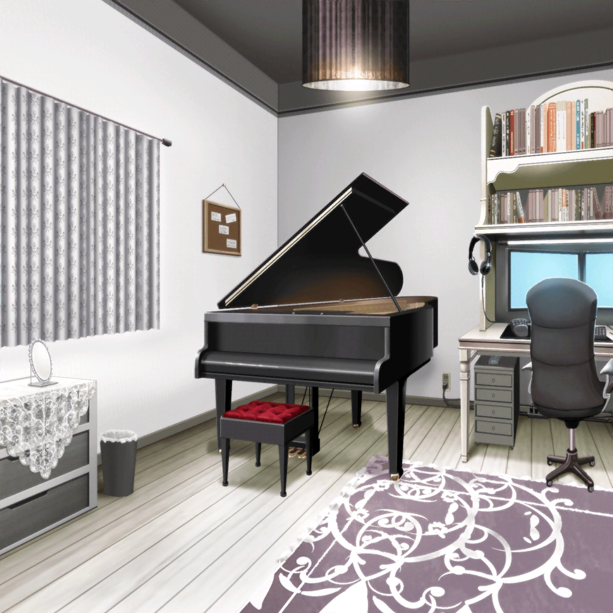

白金家 燐子の部屋
燐子
衣装……
あこ
できたーっ！！！
燐子
やったね……あこちゃん……
手伝ってくれて、ありがとう……
あこ
こちらこそだよ！ この衣装作ってる時、
Roseliaが好きだーって改めて思えた！
あこ
早く、みんなに着てほしいっ！
燐子
うん……わたしも……早くみんなに
着てほしい……
あこ
あれ……？ 誰か、来たのかな？
燐子
きっと……宅配便とかじゃないかな……？
わたしじゃないと思う……
リサ・紗夜
お邪魔しま〜す！
お邪魔します
燐子
えっ……！？
あこ
リサ姉に、紗夜さん……！！？
リサ
ゴメンね、急に。
けど、こうでもしないとつかまらないかと思って
紗夜
巴さんから、二人が最近、白金さんのお家で
衣装を作っていると聞いたもので
あこ
そ、そうだったんですね……
燐子
あ、あの……わたし達……っ！
リサ
二人が練習飛び出して行っちゃった理由がわかったの
紗夜
だからこそ、力を貸してほしい
あこ
どういうことですか？
燐子
集団を……意識していた……
紗夜
ええ。あなた達２人が唯一、私達５人のなかで
ずっとRoseliaを見てくれていた
リサ
アタシ達が、もう一度Roseliaを取り戻すには、
みんな全員、Roseliaであることをもう一回意識しないと
いけないなって思って……
リサ
ホント、今更恥ずかしいことなんだけど。
今までもずっと、バンドをやってたはずなのにさ
燐子
わ、わたし達も、ずっと……Roseliaを取り戻す
方法を……考えていたんです……
紗夜
そうだったんですか？
燐子
はい……これからもRoseliaでいたい……
だから、わたしとあこちゃんは……２人で、衣装を作って……
あこ
作ってる時、ずっとみんなのことを考えてたんです！
それが、すごく楽しくて……もっともっとRoseliaで
いたいって思えて……
あこ
Roseliaのことを考えて、楽しい気持ちになるのって、
ホントはダメなのかもしれない。もっと、真剣にならなきゃ……
あこ
でも、あこはRoseliaが大好きだから……！
紗夜
その気持ち、これからのRoseliaにとって
とても大切なものになると思うわ
紗夜
その気持ちは、
Roseliaに誇りを持っているということだから
あこ
は、はい！ そうなんだと思いますっ！
あこ、Roseliaに誇りを持ってます！
燐子
わ、わたしもあこちゃんと同じくらい……Roseliaのこと、
大切です……！
リサ
あこ、燐子。大切なことに気づかせてくれてありがとう
燐子
い、いえ……わたし達は、なにも……
それに……
燐子
今井さんや氷川さんがRoseliaを
取り戻したいと思ったのは……
きっと……Roseliaが好き、だからだと思います……
リサ
そっか……うん、そうなのかも。
きっとそれに気づけなかったのも、今までRoseliaを
見てなかったからなんだよね
リサ
反省、反省
紗夜
そうね……私も反省しなくては
リサ
ね……友希那もさ、
Roseliaのこと、好きかな？
あこ
きっと、好きだと思います……！
理由は、わからないけど……きっと、好きです！
あこ
友希那さんはすごく厳しいけど、厳しいのって、
きっとRoseliaのこと信じてるからですよね？
あこ
Roseliaならもっとやれる！ って
思ってくれてるからですよね？
燐子
みんなで……友希那さんともう一度……
話してみませんか……？
燐子
わたし達はすでに……Roseliaとしての
『誇り』を持っているんだって……